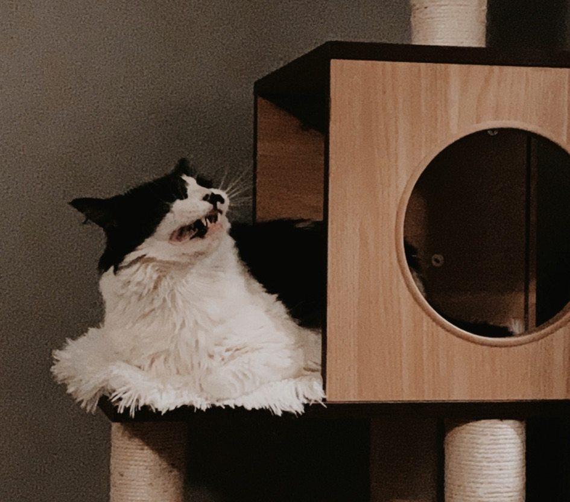
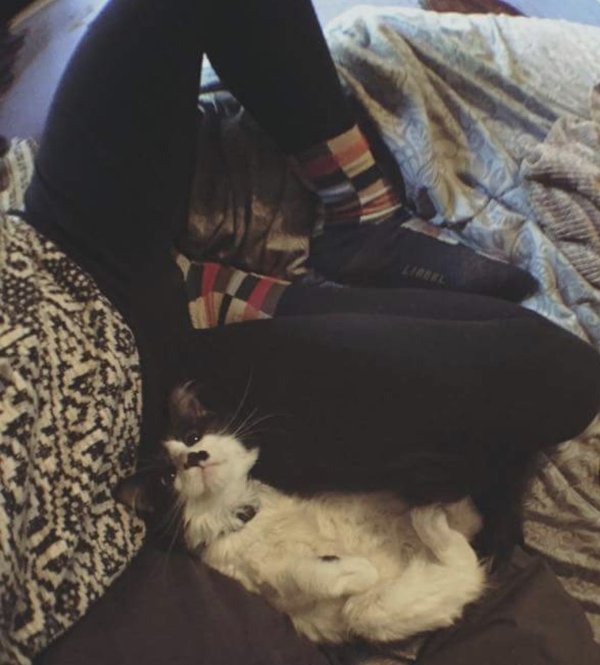
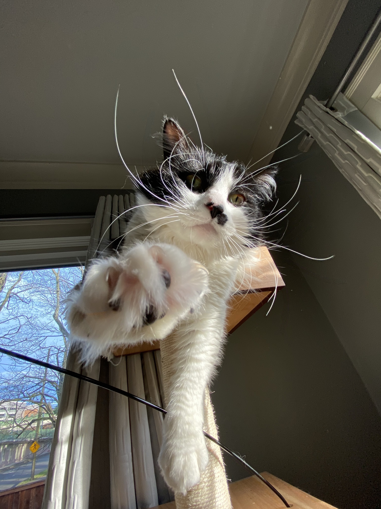
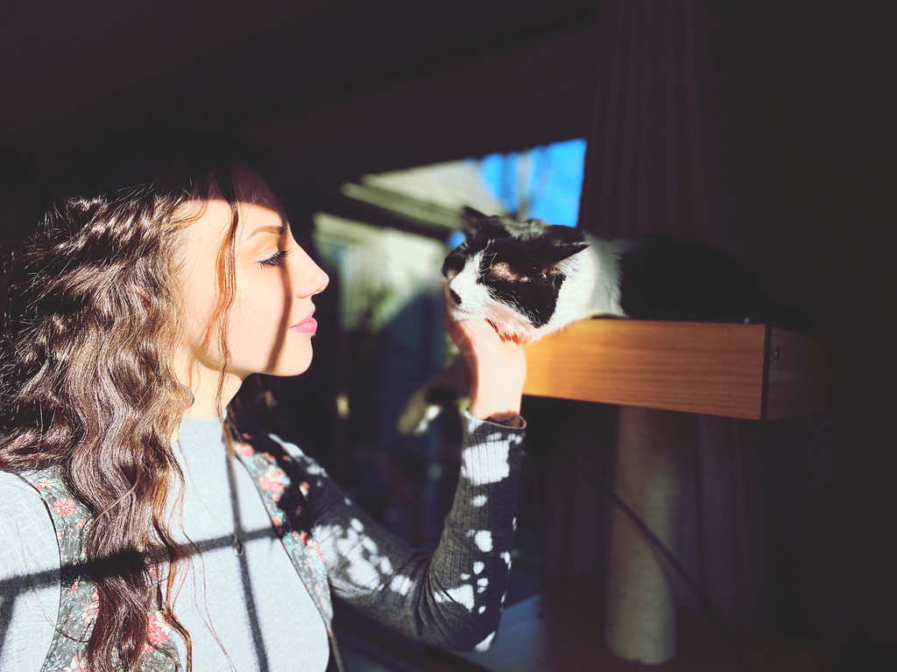

= ^ . ^ = Meet my feline son, Hugo! = ^ . ^ =
On this webpage, I will go over some of my favorite things about my Norwegian Forest cat, Hugo!
You Might Be Wondering..
"What does this thing look like anyway"?
- Huge green eyes!
- 75% fluff
- Mostly black fluff on top, white belly
- Long black poofy tail
- Roughly 13lbs
If I needed to blackmail Hugo, this is the photo I would use:

So how did we meet?
I met Hugo, formerly known as Marshall, at an adoption event in the Petsmart I was employed at in 2015.
It was December 5th and I had just gone to pick up my check, not knowing there would be roughly 200 kittens in the building!
Needless to say, Hugo won my heart immediatley. He reached his tiny paws up and held my face close to his as he sniffed my nose
and I scratched his curly belly. I took him home with me and after getting to home him more, decided to name him after my favorte childhood book, "The Invention of Hugo Cabret".
He has been holding my face the same ever since.
The day I brought Hugo home!

Some of Hugo's favorite things:
- Food Items
- Freeze Dried Chicken
- Tuna & salmon wet food
- Meat filled crunchies
- Our houseplants
- Toys
- HAIR TIES
- The stringy stick
- The squeaky mouse
- His new fancy cat tower
- My hair
- Passtime Activities
- Sleeping
- Sctratching furniture instead of his fancy cat post
- Kneading on me when I wear nice clothes
- Begging for food
- Chasing hairties around on the hardwoods
Some of Hugo's least favorite things
- Being left alone
- The vaccuum
- The mere thought of going outside
- When I am two minutes late to feed him
- When I yell at him to stop eating our Thai chilli pepper plant
Hugo's Greatest Acomplishments
Indoctrinating "Dog People"
It's always a proud feline mama moment when Hugo changes someones opinions of cats. In 2019 alone, I had five different friends tell me that Hugo is their favorite cat, he's just so chill! Hugo likes to be a cat scarf, which always suprises people when they meet him.
Agility
After spending four years of life in a studio apartment, moving into a large house helped Hugo gain some confidence. Now he loves to leap from couch to couch, climb his cat tower and chase hair ties all over the house!
Bat Menace
Hugo has been known to catch bats in his day, likely leaving them wrapped up in my bedding with holes in their wings - but not dead.
Bath Boi
Hugo's first bath ever was nothing short of a miracle. It was then I realized, I adopted the greatest cat of all time. I filled up the bath and slowly put him in, he was initially terrified but once fully submerged, he became very calm and swam around curiously. He doesnt love baths, but he allows me to do what needs to be done so he can get out and scurry around like a wet mop on four legs.

My Top Favorite nicknames for Hugo:
- "Huges" (hue-gzz)
- Bowl of fuzz
- *Me with an angry italian grandma accent* "Aye, You-go! Ya just like ya fatha"
- "Stinko"
- "The terrorist"

Thank's for reading about my best friend, Hugo! I'll add more to this page as I learn more at Epicodus!
Until then, track my work here!